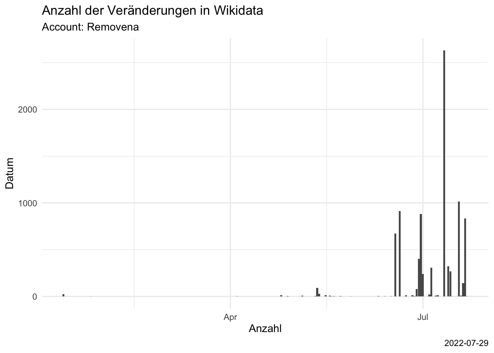

Bestandsaufnahme
Queere Geschichte als offene Daten
Um mit maschineller Hilfe fehlende Daten aufzuspüren, braucht es ein Positiv (den Knowledge Graph zur LGBTIQ*-Geschichte), um durch einen Abgleich mit Linked-Open-Data wie WikiData das Negativ (die Leerstellen) aufleuchten zu lassen.
Dieses Positiv ist in Factgrid gespeichert, einer Datenbank für Historiker*innen.
| Typ | Anzahl 31. Mai 2022 | Anzahl 2022-07-22 |
|---|---|---|
| Objekt | 7170 | 7415 |
| Verbindungen | 34902 | 38518 |
Zeichnet man alle Verbindungen, kommt man bei diesem Bild raus:

Lücken auffüllen
Das Ziel ist es ja, fehlende Daten – die NAs – zu finden und wenn möglich aufzufüllen. Die Zieldatenbank ist Wikidata. Wikidata ist der wichtigste Datenumschlagplatz in der digitalen Welt. Dort werden strukturiert Daten zu allen möglichen Konzepten, Personen, Orten und was auch immer erfasst. Diese Objekte nennt man auch Entitäten. Alle Entitäten können auch mit vielen anderen Datensätzen verknüpft werden – wie Factgrid.
Queere Geschichte, ihre Akteure und Schauplätze, sollen also in Wikidata oder mit Wikidata verbunden werden.
Alle Wikiprojekte führen detailliert Buch darüber, wer was wann wie verändert. Auch RemoveNA können die letzten 500 Veränderungen eingesehen werden. Diese Daten kann ich auch in eine Grafik packen:

Als Tabelle (Stand: 2022-07-22), die letzten 500 Einträge: